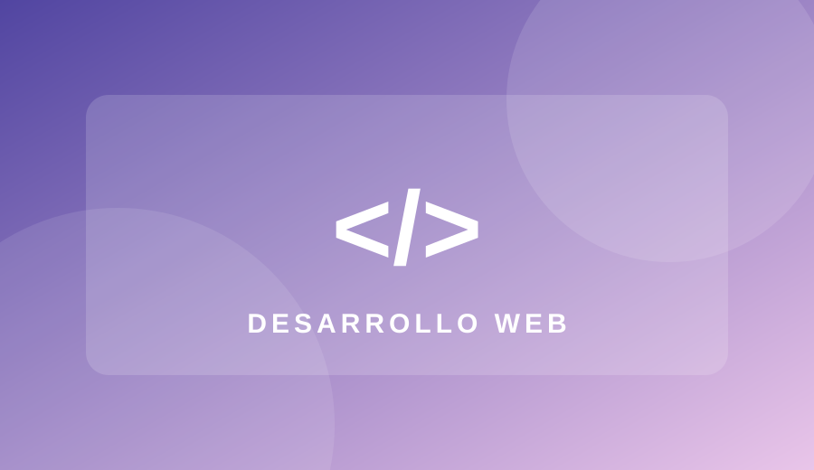

Formación académica
Ingeniería en Sistemas Inteligentes
En proceso
Tecnología en Marketing Digital y Ventas
Titulada
MARKETING DIGITAL · INNOVACIÓN · TECNOLOGÍA
Tecnóloga en Marketing Digital y Ventas · Estudiante de Ingeniería en Sistemas Inteligentes.
Combino estrategia comercial, creatividad y herramientas digitales para crear experiencias y soluciones que generan valor.
📍 Quito, Ecuador
MI HISTORIA
Soy Melany, profesional en formación en Ingeniería en Sistemas Inteligentes y tecnóloga titulada en Marketing Digital y Ventas. Tengo más de tres años de experiencia en marketing, asesoría comercial, atención al cliente y campañas digitales en el sector de capacitación profesional.
Me apasiona aprender sobre inteligencia artificial, programación, comunicación y estrategias para mejorar procesos. Mi objetivo es integrar la tecnología con el marketing y desarrollar soluciones creativas, útiles y orientadas a resultados.
Ingeniería en Sistemas Inteligentes
En proceso
Tecnología en Marketing Digital y Ventas
Titulada
LO QUE SÉ HACER
Fortalezas comerciales y digitales, mientras desarrollo nuevas capacidades en programación web.
Planificación de campañas, redes sociales y posicionamiento.
Segmentación, seguimiento y optimización de anuncios.
Uso de herramientas de inteligencia artificial para productividad.
Diseño en Canva, edición en CapCut y comunicación visual.
Ventas consultivas, CRM, liderazgo y atención al cliente.
Aprendizaje académico de HTML, CSS, Git y GitHub.
MI EXPERIENCIA
Más de 3 años de experiencia
Marketing digital, ventas y gestión comercial
Participación en gestión de campañas publicitarias, seguimiento de clientes en CRM y WhatsApp Business, creación de contenido digital y apoyo en estrategias de posicionamiento y conversión.
APLICANDO LO APRENDIDO
Ejemplos de áreas y trabajos que forman parte de mi experiencia y aprendizaje.
MARKETING DIGITAL
Participación en estrategias digitales y contenido orientado a captar y atender clientes.
TECNOLOGÍA
Aplicación de herramientas de IA para optimizar tareas de comunicación y productividad.

PROYECTO ACADÉMICO
Diseño y desarrollo de este sitio con HTML y CSS, utilizando Git y GitHub para registrar su evolución.
Ver código en GitHub ↗CONVERSEMOS
¿Tienes una idea o deseas conocer más sobre mi trabajo? Puedes encontrarme en GitHub o completar este formulario de demostración.
📍 Quito, Ecuador
El formulario es visual y no envía información, como permite la actividad.